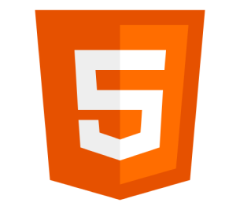
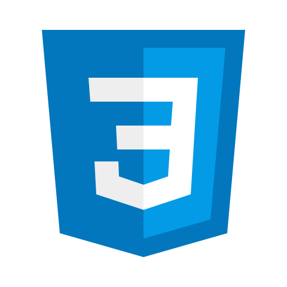
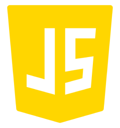
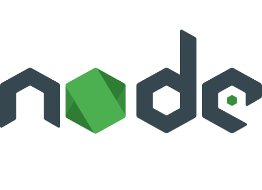

Rodrigo Brinate Protazio
- Stacks
- Sobre min
- Currículo
- Projetos
Rodrigo Brinate Protazio
Web Developer
Full stack
"O sucesso é a soma de pequenos esforços repetidos diariamente."
Robert Collier
Stack
- 
Concimentos e epeiências em HTML 5 para criação de sites asscessíveis
- 
Habilidades em desenvolver designs responsíveis, elegantes e animados
- 
Competencia na criação de sitemas e funcinalidades que facilitam a vida do usuário
- 
Sobre min
Meu nome é Rodrigo e sou um desenvolvedor de software com vasta experiência em resolver problemas complexos e entregar soluções de qualidade. Ao longo de minha carreira, desenvolvi habilidades técnicas que me permitem trabalhar em diferentes plataformas e linguagens de programação, como PHP e JavaScript.
Além disso, também sou um praticante assíduo de atividades físiscas Acredito que um estilo de vida saudável e equilibrado é fundamental para atingir um alto desempenho, tanto no trabalho quanto na vida pessoal. Essa mentalidade se reflete em minha abordagem ao desenvolvimento de software, onde busco sempre entregar soluções robustas, escaláveis e fáceis de manter.
Minha paixão por tecnologia me mantém constantemente atualizado sobre as tendências mais recentes no mercado de desenvolvimento de software. Sempre estou em busca de aprimorar minhas habilidades e conhecimentos, seja através de cursos, treinamentos, eventos ou simplesmente lendo blogs e artigos relevantes.
Acima de tudo, sou um profissional que valoriza o trabalho em equipe e a colaboração. Acredito que, ao unir forças e compartilhar ideias, podemos criar soluções ainda mais inovadoras e eficientes.
Neste portfólio, você encontrará alguns dos projetos que desenvolvi ao longo de minha carreira, cada um deles com seu próprio conjunto de desafios e soluções. Espero que isso lhe dê uma ideia do meu estilo de trabalho e das habilidades que posso trazer para sua empresa.
Currículo
Projetos
Introdução
Desenvolvi um projeto em React JS, Node.js, Express.js e TypeScript para uma empresa de telecomunicações. O objetivo do sistema é gerenciar os técnicos e as atividades que eles realizam em determinadas cidades. Além disso, a aplicação conta com um sistema de autenticação, autorização e atualização em tempo real utilizando web sockets. O projeto apresentou diversos desafios, como a implementação do drag and drop e a utilização de web sockets, mas todos foram superados com sucesso. Segurança
Para garantir a segurança do projeto, adotei diversas medidas importantes. Uma delas foi a implementação da estratégia de token JWT (JSON Web Tokens) para autenticação. Com isso, é possível garantir a segurança na transmissão de dados entre cliente e servidor. Outra medida foi a implementação de um sistema de autorização, permitindo que o cliente possa separar seus usuários por departamentos e definir diferentes níveis de acesso para cada um deles. Com isso, é possível garantir que apenas usuários autorizados possam acessar determinadas funcionalidades e recursos do sistema. Em relação à infraestrutura, implementei o sistema dentro de um container Docker, o que possibilita uma melhor gestão e controle dos recursos utilizados, além de facilitar a escalabilidade do sistema. Além disso, implementei um firewall para o bloqueio de portas desnecessárias, o que impede que usuários mal-intencionados possam acessar o sistema de forma não autorizada. Por fim, implementei uma estratégia de bloqueio de IP para evitar ataques DDoS ou de força bruta. Essa estratégia funciona bloqueando automaticamente o IP de um usuário após 500 requisições em um período de 2 minutos. Dessa forma, o sistema pode evitar que usuários maliciosos comprometam a segurança e a disponibilidade da aplicação, mantendo o acesso livre para usuários comuns.
Infraestrutura
Como mencionado anteriormente, implementei o sistema dentro de um container Docker para garantir uma melhor gestão e controle dos recursos utilizados, além de facilitar a escalabilidade do sistema. Essa escolha também permite uma maior flexibilidade na configuração do ambiente de desenvolvimento e de produção. Outra medida importante foi a utilização de web sockets para atualização em tempo real da aplicação. Essa funcionalidade foi implementada com sucesso e garante uma maior interatividade do sistema, possibilitando que as atualizações sejam feitas em tempo real para todos os usuários.
Conclusão
Em resumo, o meu projeto demonstra uma abordagem completa e profissional para o gerenciamento de equipes de técnicos em uma empresa de telecomunicações, oferecendo segurança, eficiência e flexibilidade aos usuários do sistema. Com a implementação das funcionalidades de autenticação, autorização e atualização em tempo real, foi possível oferecer uma solução completa para o gerenciamento de equipes. A escolha de implementar o sistema dentro de um container Docker e a utilização de web sockets para atualização em tempo real também foram medidas importantes para garantir uma melhor infraestrutura e disponibilidade do sistema. Por fim, a implementação de medidas de segurança, como a utilização de token JWT, firewall e bloqueio de IP, garantiu uma maior segurança na transmissão de dados e no acesso ao sistema. Em resumo, o projeto que desenvolvi é uma solução completa e profissional para o gerenciamento de equipes de técnicos em uma empresa de telecomunicações. Com a implementação de funcionalidades avançadas de autenticação, autorização e atualização em tempo real, além de medidas de segurança e infraestrutura robustas, é possível garantir uma maior eficiência e segurança no gerenciamento das atividades e equipes da empresa.